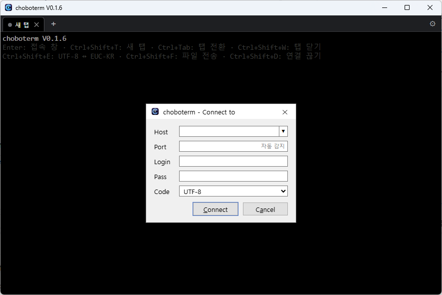
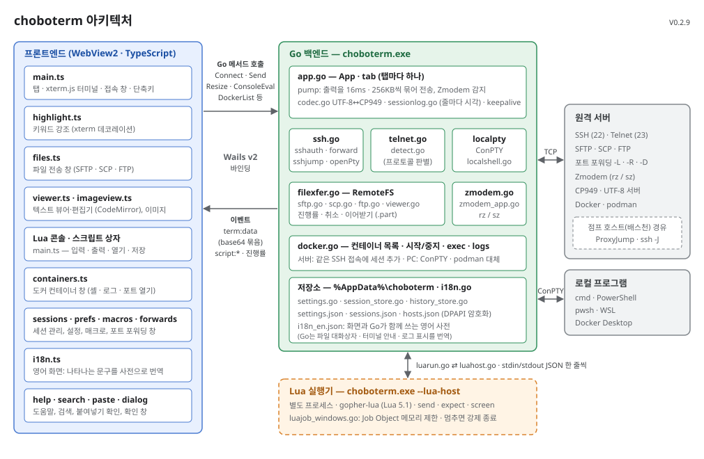
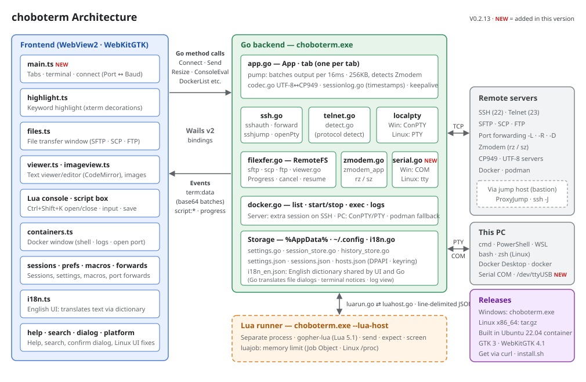

choboterm
ZTerm처럼 간결한 Windows · Linux용 SSH · Telnet · FTP · 시리얼 터미널
A simple SSH · Telnet · FTP · serial terminal for Windows and Linux, in the spirit of ZTerm
화면Screenshot

기능
- SSH · Telnet · FTP22/23/21번 포트는 바로, 다른 포트는 서버 응답으로 자동 판별 (예: Termux 8022)
- SSH 키 · 에이전트 · OTPOpenSSH 에이전트 · Pageant의 키 자동 사용, 암호 걸린 개인키, 인증 코드(OTP) 같은 2단계 인증 질문
- 점프 호스트 (ProxyJump)배스천을 거쳐 내부 서버로. 접속 창의 Jump 칸, ~/.ssh/config의 ProxyJump, ssh -J 모두 지원, 여러 단계도 가능
- ssh config 이름으로 접속Host 칸에 busan 또는 ssh busan만 입력하면 ~/.ssh/config의 주소·포트·사용자·키로 접속
- 탭 · 분할 창여러 접속을 탭으로, 한 탭 안을 좌우·위아래로 나눠 창마다 따로 접속. 탭마다 인코딩·파일 전송이 따로 동작
- 로컬 셸Host에 cmd · powershell · wsl(Linux는 bash · zsh)을 쓰면 이 PC의 셸을 탭에서 바로 실행 (WSL에서 sz / rz도 가능)
- 시리얼 포트Host에 COM3(Linux는 /dev/ttyUSB0), Port 칸에 속도(baud). "COM3 9600 7E1 rtscts"처럼 패리티·흐름 제어도 지정. 연결된 포트 목록, Break 신호, USB를 다시 꽂으면 자동 재접속
- EUC-KR (CP949)옛 BBS 한글과 ─│■▒ 특수문자 2칸 폭까지, 굴림체 등 인코딩별 글꼴 선택
- SFTP · SCPSSH 접속 그대로 파일 전송, SFTP가 없으면 SCP로 자동 전환
- Zmodem터미널에서 sz / rz만 입력하면 파일 송수신
- 안전한 저장known_hosts 확인, 비밀번호는 Windows DPAPI · Linux 키링으로 암호화
- 포트 포워딩SSH 로컬(-L) · 원격(-R) · 동적(-D, SOCKS5). 호스트별로 저장해 다음 접속 때 자동 적용. 열린 연결 수와 같은 동작의 ssh 명령어 표시·복사. 같은 서버에 탭을 여러 개 열어도 한 탭만 수신하고, 그 탭이 끊기면 다른 탭이 이어받음
- 도커 컨테이너Ctrl+Shift+J로 SSH 서버나 이 PC(Docker Desktop)의 컨테이너 목록. 셸(docker exec) · 로그를 새 탭으로 바로 열고(다시 로그인 없음), 시작 · 중지 · 재시작, 포트 열기로 서버 포트를 PC로 포워딩해 브라우저로
- 연결 유지 · 자동 재접속쉬는 연결이 끊기지 않게 keepalive, 네트워크가 끊기면 화면을 그대로 두고 다시 연결
- Lua 스크립트send · expect · sleep · screen으로 자동 로그인, 반복 명령 자동화. 매크로 F키나 .lua 파일로 실행, 별도 프로세스에서 돌아 스크립트가 멈춰도 터미널은 그대로
- Lua 콘솔Ctrl+Shift+K로 한 줄씩 바로 실행하는 REPL. 변수 유지, 식의 값 표시, .lua 파일 불러오기(Ctrl+O), 입력·출력 저장(Ctrl+S), 끌어서 높이 조절
- 새 버전 확인설정에서 켜면 시작할 때 하루 한 번 GitHub에 새 릴리스를 물어보고 다운로드 페이지를 열어 줌. 기본은 꺼짐(아무것도 보내지 않음), "지금 확인" 버튼으로 바로 확인
- 매크로자주 쓰는 명령을 저장해 두고 창이나 F키로 바로 보내기
- 세션 로그받은 출력을 파일에 계속 저장 (접속할 때 자동 시작, 일반 텍스트 또는 원본), 줄마다 받은 시각 [2026-10-09 21:30:15.123]
- 키워드 강조출력의 error · fail · 오류는 빨강, warning · 경고는 노랑, success · 성공은 초록 배경. 단어는 설정에서 바꾸고, 프로그램 색과 로그는 그대로
- 편한 파일 창셸의 현재 폴더에서 바로 열림. 여러 개 선택, 폴더째 받기·올리기, 탐색기에서 끌어 놓기, 삭제 · 이름 바꾸기 · 새 폴더 · 새 파일, 맨 위 .. 와 Alt+↑로 상위 폴더. 끊긴 전송은 이어받기 · 이어 올리기 (SFTP · FTP)
- 원격 파일 보기 · 편집F3 / F4로 받지 않고 바로 열기. UTF-8 · EUC-KR 자동 판별, 찾기·바꾸기, Ctrl+S로 서버에 저장 (인코딩·줄바꿈 유지, 충돌 확인). JPG · PNG · GIF · BMP · WebP 이미지는 F3으로 이미지 보기 (확대 · 이전/다음)
- 영어 화면 (English UI)설정에서 자동 / 한국어 / English. 메뉴 · 창 · 오류 메시지 · 파일 대화상자까지 영어로
- 복사 · 붙여넣기선택하면 복사, 우클릭으로 붙여넣기. 여러 줄은 실행 전에 확인
- GPU 가속 화면WebGL로 그려 htop · vim 같은 TUI도 끊김 없이. 창 제목에 ⚡GPU / 🐢CPU 표시
- 색 테마Campbell · PuTTY · Dracula · Solarized · 허큘리스(녹색 모니터) 등 12가지 색 테마, 서버별로 다른 테마 지정, 반투명(창 전체 / 배경만), 커서 모양, 스크롤백 줄 수
- 검색 · 글꼴 · 링크스크롤백 검색, Ctrl+휠 글꼴 크기, Ctrl+클릭으로 URL 열기, 창 위치 기억
Features
- SSH · Telnet · FTPPorts 22/23/21 directly; other ports are detected from the server's greeting (e.g. Termux on 8022)
- SSH keys · agent · OTPKeys from the OpenSSH agent and Pageant, passphrase-protected private keys, and two-factor questions such as one-time codes
- Jump hosts (ProxyJump)Reach inner servers through a bastion: the Jump field, ProxyJump in ~/.ssh/config and ssh -J, several hops too
- Connect by ssh config nameType busan or ssh busan in Host and the address, port, user and key come from ~/.ssh/config
- Tabs · split panesConnections in tabs; split a tab left/right or top/bottom with a connection in each pane. Encoding and file transfer per tab
- Local shellscmd · powershell · wsl (bash · zsh on Linux) in Host runs this PC's shell in a tab (sz / rz work in WSL too)
- Serial portsCOM3 (/dev/ttyUSB0 on Linux) in Host, the speed (baud) in Port. Parity and flow control too: "COM3 9600 7E1 rtscts". Lists connected ports, sends a break, reconnects when a USB adapter is plugged back in
- EUC-KR (CP949)Korean text of old BBSes, with ─│■▒ symbols two cells wide, and a font per encoding such as GulimChe
- SFTP · SCPFile transfer over the same SSH connection; falls back to SCP when the server has no SFTP
- ZmodemType sz / rz in the terminal to send and receive files
- Safe storageknown_hosts checks; passwords encrypted with Windows DPAPI or the Linux keyring
- Port forwardingSSH local (-L) · remote (-R) · dynamic (-D, SOCKS5). Saved per host and started on the next connection. Shows open connections and the equivalent ssh command to copy. With several tabs to one server only one listens, and another takes over when it ends
- Docker containersCtrl+Shift+J lists the containers of the SSH server or of this PC (Docker Desktop). Shell (docker exec) and logs open in new tabs without logging in again; start · stop · restart; open a port forwards it to this PC and opens the browser
- Keepalive · reconnectKeepalive so idle connections stay up; when the network drops it reconnects, keeping the screen
- Lua scriptssend · expect · sleep · screen for auto login and repeated commands. Run from a macro F key or a .lua file, in a separate process so a stuck script never freezes the terminal
- Lua consoleCtrl+Shift+K: a REPL running one line at a time. Variables kept, expression values shown, load a .lua file (Ctrl+O), save input and output (Ctrl+S), drag to resize
- Update checkWhen turned on in Settings, asks GitHub for a new release once a day at start and offers its download page. Off by default (nothing is sent); "Check now" checks right away
- MacrosSave frequent commands and send them from the window or an F key
- Session logKeeps writing the output to a file (starts on connect, plain text or raw), each line with the time it came [2026-10-09 21:30:15.123]
- Keyword highlightingerror · fail in red, warning in yellow, success in green behind the text. Words are set in Settings; program colors and logs stay as they are
- Handy file windowOpens in the shell's current folder. Multiple selection, whole folders up and down, drag and drop from Explorer, delete · rename · new folder · new file, .. at the top and Alt+↑ for the parent. Interrupted transfers resume (SFTP · FTP)
- View · edit remote filesF3 / F4 open files without downloading. UTF-8 · EUC-KR detected, find and replace, Ctrl+S saves to the server (keeps encoding and line endings, checks for conflicts). F3 on JPG · PNG · GIF · BMP · WebP shows the image (zoom · previous / next)
- English UIAuto / 한국어 / English in Settings. Menus, windows, error messages and file dialogs in English
- Copy · pasteSelecting copies, right click pastes. Several lines are confirmed before they run
- GPU-accelerated screenDrawn with WebGL, so TUIs like htop and vim run smoothly. ⚡GPU / 🐢CPU in the window title
- Color themes12 themes such as Campbell · PuTTY · Dracula · Solarized · Hercules (green monitor), a theme per server, translucency (whole window / background only), cursor shape, scrollback lines
- Search · fonts · linksScrollback search, Ctrl+wheel font size, Ctrl+click opens URLs, window position remembered
구조Architecture


단축키
| Ctrl+Shift+T | 새 탭으로 접속 |
| Ctrl+Tab / Ctrl+Shift+Tab | 다음 / 이전 탭 |
| Ctrl+Shift+W | 탭 닫기 (분할된 탭에서는 지금 창만) |
| Ctrl+Shift+\ / Ctrl+Shift+- | 오른쪽 / 아래로 창 분할 |
| Alt+←→↑↓ (분할된 탭) | 옆 창으로 이동 |
| Ctrl+Shift+F | 파일 전송 창 (SFTP / SCP / FTP) |
| Backspace / Alt+↑ (파일 창) | 상위 폴더 (목록 맨 위 .. 도 같음) |
| F3 / F4 (파일 창) | 원격 텍스트 파일 보기 / 편집 (Ctrl+S 서버에 저장) |
| Ctrl+Shift+E | UTF-8 ↔ EUC-KR |
| Ctrl+Shift+D | 연결 끊기 |
| Ctrl+Shift+C / Ctrl+Shift+V | 복사 / 붙여넣기 (마우스 선택 = 복사, 우클릭 = 붙여넣기) |
| Ctrl+Shift+S | 스크롤백 검색 |
| Ctrl+휠 / Ctrl+= / Ctrl+- | 글꼴 크게 / 작게 |
| Ctrl+Shift+M | 매크로 |
| Ctrl+Shift+K | Lua 콘솔 열기 / 닫기 (Ctrl+O 파일 불러오기 · Ctrl+S 저장) |
| Ctrl+Shift+H | 세션 관리 |
| Ctrl+Shift+P | SSH 포트 포워딩 |
| Ctrl+Shift+J | 도커 컨테이너 |
| Ctrl+Shift+L | 세션 로그 기록 시작 / 중지 |
| Ctrl+Shift+O | 설정 (색 테마, 커서, 언어, 키워드 강조, 연결 유지 간격, 로그 등) |
| F1 | 도움말 (한국어 / English) |
Shortcuts
| Ctrl+Shift+T | Connect in a new tab |
| Ctrl+Tab / Ctrl+Shift+Tab | Next / previous tab |
| Ctrl+Shift+W | Close the tab (only the current pane of a split tab) |
| Ctrl+Shift+\ / Ctrl+Shift+- | Split right / down |
| Alt+←→↑↓ (split tab) | Move to the next pane |
| Ctrl+Shift+F | File transfer (SFTP / SCP / FTP) |
| Backspace / Alt+↑ (file window) | Parent folder (same as .. at the top) |
| F3 / F4 (file window) | View / edit a remote text file (Ctrl+S saves to the server) |
| Ctrl+Shift+E | UTF-8 ↔ EUC-KR |
| Ctrl+Shift+D | Disconnect |
| Ctrl+Shift+C / Ctrl+Shift+V | Copy / paste (selecting copies, right click pastes) |
| Ctrl+Shift+S | Search the scrollback |
| Ctrl+wheel / Ctrl+= / Ctrl+- | Larger / smaller font |
| Ctrl+Shift+M | Macros |
| Ctrl+Shift+K | Open / close the Lua console (Ctrl+O load a file · Ctrl+S save) |
| Ctrl+Shift+H | Sessions |
| Ctrl+Shift+P | SSH port forwarding |
| Ctrl+Shift+J | Docker containers |
| Ctrl+Shift+L | Start / stop the session log |
| Ctrl+Shift+O | Settings (color theme, cursor, language, keyword highlighting, keepalive, logs...) |
| F1 | Help (한국어 / English) |
설치
Windows: 설치 과정 없이 choboterm.exe를 내려받아 실행하면 됩니다. Windows 10 / 11 (WebView2 런타임, Windows 11에는 기본 포함)에서 동작합니다.
코드 서명이 없는 실행 파일이라 처음 실행할 때 "Windows의 PC 보호" 창이 뜰 수 있습니다. 추가 정보 → 실행을 누르면 됩니다.
Linux (x86_64): choboterm-linux-amd64.tar.gz를 풀고 ./choboterm으로 실행합니다.
./install.sh를 실행하면 ~/.local/bin과 프로그램 메뉴에 등록됩니다.
GTK 3와 WebKitGTK 4.1이 필요합니다 (Ubuntu 22.04 · Debian 12 이후: sudo apt install libgtk-3-0 libwebkit2gtk-4.1-0).
터미널에서 바로 받아 설치하려면:
curl -LO https://github.com/chobocho/choboterm/releases/latest/download/choboterm-linux-amd64.tar.gz
tar xzf choboterm-linux-amd64.tar.gz
cd choboterm-linux-amd64
./install.sh # ~/.local/bin/choboterm, 프로그램 메뉴 등록
setsid ~/.local/bin/choboterm >/dev/null 2>&1 & # 터미널을 닫아도 창이 유지됨Linux에서는 키링(GNOME Keyring, KWallet 등)이 있을 때만 비밀번호를 저장하고, 반투명 창과 PuTTY 세션 가져오기는 지원하지 않습니다. macOS는 지원하지 않습니다.
Install
Windows: no installer; download choboterm.exe and run it. Works on Windows 10 / 11 (WebView2 runtime, built into Windows 11).
The executable is not code-signed, so the first run may show "Windows protected your PC". Click More info → Run anyway.
Linux (x86_64): extract choboterm-linux-amd64.tar.gz and run ./choboterm.
./install.sh puts it in ~/.local/bin and the application menu.
Needs GTK 3 and WebKitGTK 4.1 (Ubuntu 22.04 · Debian 12 or later: sudo apt install libgtk-3-0 libwebkit2gtk-4.1-0).
To download and install from a terminal:
curl -LO https://github.com/chobocho/choboterm/releases/latest/download/choboterm-linux-amd64.tar.gz
tar xzf choboterm-linux-amd64.tar.gz
cd choboterm-linux-amd64
./install.sh # ~/.local/bin/choboterm and a menu entry
setsid ~/.local/bin/choboterm >/dev/null 2>&1 & # keeps running after the terminal closesOn Linux passwords are saved only when a keyring (GNOME Keyring, KWallet...) is available; translucent windows and PuTTY session import are Windows only. macOS is not supported.